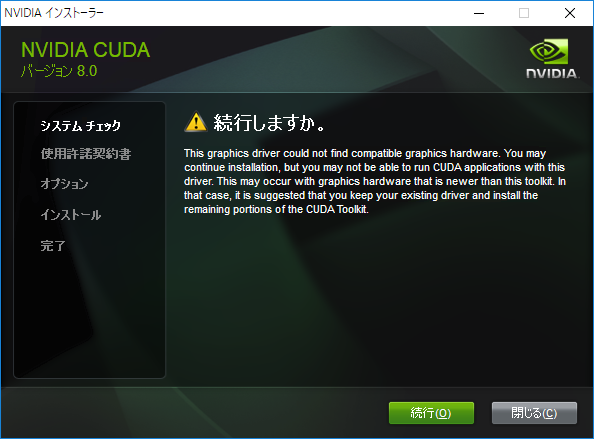
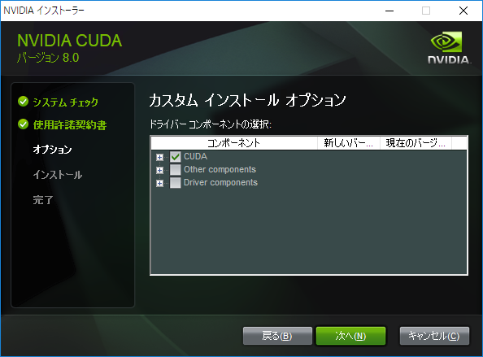
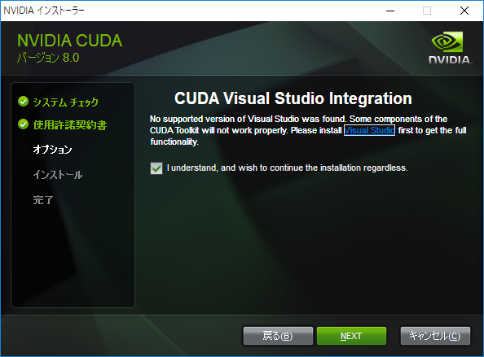

Pythonを使ってディープラーニングの学習をしていきます．この記事では，必要なパッケージなどをインストールする方法を順を追って説明し，学習を開始できる状態にします．今回インストールする主なPythonパッケージは，以下の通りです．
- Theano
- TensorFlow
- Keras
- Neural Network Libraries
GPUを使って計算するため，CUDA ToolkitおよびcuDNNもインストールします． これらは，使用するPythonパッケージが対応しているバージョンをインストールする必要があります．特に何も指定しないと，最新版がインストールされて，Pythonパッケージが実行できないというケースがあるので注意が必要です．具体的には，以下のバージョンを使います：
- CUDA Toolkit: Version 8.0 GA2
- cuDNN: Version 6.0
インストールするPC環境は以下の通りです（PC新調に伴い2018/2/4に更新）：
- OS: Windows 10 Home (64-bit)
- CPU: Intel Core i7-7700HQ @ 2.80 GHz
- GPU: NVIDIA GeForce GTX 1050
- RAM: 16 GB
1 Microsoft Visual C++ 2015 再頒布可能パッケージ
Neural Network Librariesは，VC++14（Visual Studio 2015相当）でコンパイルされているので、Visual Studio 2015のRuntimeが必要です．未インストールの場合はインストールしておきます．Visual Studio本体はインストールする必要はありません．
2 CUDA Toolkit
https://developer.nvidia.com/cuda-toolkit-archiveで，CUDA Toolkitのバージョンを選択した後，
- Operating System: Windows
- Architecture: x86_64
- Version: 10
- Installer Type: exe (local)
を選び，ダウンロードしたファイルを実行してインストールします．現時点(2018/1/31)で，Neural Network LibrariesはVersion 8.0にしか対応していませんので，最新のVersion 9.1ではなく，Version 8.0 GA2 を選択しました．Base Installerの他に，Patch 2 (Released Jun 26, 2017)をダウンロードします．
まず，Base Installerを実行します．「システムの互換性のチェック」で，次のような画面が表示されます．

このフォーラムにあるように， インストーラが，GTX 1050の生産前に作成されているためです．[続行] > [同意して続行する] > [(カスタム)を選択して次へ]と進んで，カスタムインストールオプションで，CUDAのみを選択した状態にします．

[次へ]をクリックして進んでいくと，Visual Studioがないと警告が出ます．

特に問題ないので，そのままチェックボックスを選択して，[次へ]をクリックし，インストールを開始します．その後，先にダウンロードしていたPatch2を実行してパッチをインストールします．
3 NVIDIA cuDNN
インストールするにはメンバーシップが必要なので，https://developer.nvidia.com の右上のJoinから登録します．ダウンロードページ https://developer.nvidia.com/rdp/cudnn-download で，同意ボタンを選択し，リストの中から，
- Download cuDNN v6.0 (April 27, 2017), for CUDA 8.0
を選択します．（v7.0をインストールするとNeural Network Librariesが動作しません．） ダウンロードした圧縮ファイルを展開します．そして，展開してできたcudnn-8.0-windows10-x64-v6\cuda以下をすべて，C:\Program Files\NVIDIA GPU Computing Toolkit\CUDA\v8.0にコピーします．
4 Miniconda
https://conda.io/miniconda.htmlで，
- Windows
- Python 3.6
- 64-bit (exe installer)
を選び，ダウンロードしたファイルを実行してインストールします．インストール中の選択肢は，すべてデフォルト設定のまま行います．Miniconda3 4.3.30 (64-bit)がインストールされました．
condaを最新版にしておきます．
> conda install conda
仮想環境dlを作り，この下にインストールしていきます．
(base) > conda create -n dl
(base) > activate dl
pipでインストールされるパッケージのうち，condaで用意されているものはこの段階でインストールしておきます．bleach, html5lib, cythonについては，バージョン指定があるので，明示します．
(dl) > conda install bleach==1.5.0 html5lib==0.9999999 cython==0.25.2
(dl) > conda install werkzeug numpy markdown protobuf pyyaml contextlib2
(dl) > conda install urllib3 tqdm requests s3transfer h5py boto3
5 TensorFlow
TensorFlowは，CUDA Toolkit Version 8.0, cuDNN Version 6.0に適合するVersion 1.4を選択します．
(dl) > pip install tensorflow-gpu==1.4.0
6 Theano
Theanoはcondaでインストールします．
(dl) > conda install theano
m2w64-toolchain，libpython，libgpuarray，pygpuなどの依存パッケージも一緒にインストールされます．
コントロールパネルでユーザーの環境変数を設定します．
- 変数名:
MKL_THREADING_LAYER - 変数値:
GNU
GPUを使用するために，~\.theanorc.txtを作成して，以下の内容で保存します．
[global]
device = cuda
floatX = float32
7 Keras
Kerasをインストールします．condaでインストールすると，CPUベースのTensorFlowが勝手にインストールされるので，pipを使います．
(dl) > pip install keras
8 Neural Network Libraries
Neural Network Librariesが必要とするパッケージをcondaでインストールした後，本体をpipでインストールします．最後に，依存性は明示されていないですが，pywin32もインストールする必要があります．
(dl) > conda install scipy scikit-image
(dl) > pip install nnabla
(dl) > pip install nnabla-ext-cuda
(dl) > conda install pywin32
9 Jupyter
ディープラーニングを学習する際に，Jupyter Notebookを使いますので，Jupyter関連のパッケージ一式をインストールしておきます．
(dl) > conda install jupyter
Jupyterがdl環境下のカーネルを認識できるように，以下を実行します．
(dl) > python -m ipykernel install --user --name dl
10 インストールの確認
インポートできることを確認します．
(dl) > python
>>> import tensorflow
>>> tensorflow.__version__
'1.4.0'
>>> import theano
Using cuDNN version 6021 on context None
Mapped name None to device cuda: GeForce GTX 1050 (0000:01:00.0)
>>> theano.__version__
'1.0.1'
>>> import keras
Using TensorFlow backend.
>>> keras.__version__
'2.1.3'
KerasのTheanoをバックエンドに指定してみます．~\.keras\keras.jsonを以下の内容で保存します．
{
"floatx": "float32",
"epsilon": 1e-07,
"backend": "theano",
"image_data_format": "channels_last"
}
インポートしてみます．
(dl) > python
>>> import keras
Using Theano backend.
Using cuDNN version 6021 on context None
Mapped name None to device cuda: GeForce GTX 1050 (0000:01:00.0)
最後にNeural Network Librariesです．
(dl) > python
>>> import nnabla
2018-02-04 20:19:37,163 [nnabla][INFO]: Initializing CPU extension...
>>> import nnabla_ext.cuda.cudnn
2018-02-04 20:19:47,262 [nnabla][INFO]: Initializing CUDA extension...
2018-02-04 20:19:47,545 [nnabla][INFO]: Initializing cuDNN extension...
以上で，ディープラーニングを実行する環境が整いました．
この記事は2018年02月04日 (日)に更新されました．